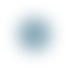

SYRA LMS combines learning management, operational workflows, reporting, certifications, and role-based administration into a single platform designed for scale.
Whether you're managing internal training, partner enablement, accreditation programs, compliance workflows, or multi-branch learning operations, the platform adapts naturally to your structure.
SYRA LMS helps teams operate with clarity, without unnecessary complexity.
Create seamless learning experiences with video lessons, live sessions, assignments, quizzes, certifications, discussions, SCORM content, and guided learning paths — all connected through one unified platform.
Every interaction is designed to feel clear, calm, and purposeful for learners, instructors, and administrators alike.
Learning paths, assessments and grading, certifications, video progress tracking, gamification, discussions and messaging, live training, and SCORM & xAPI support are all included.
Administrators — manage users, branches, permissions, reports, security settings, custom fields, notifications, and platform-wide operations.
Instructors — create courses, manage learners, grade assignments, host live sessions, and oversee learning progress from one workspace.
Learners — access courses, certifications, assignments, discussions, achievements, and learning paths through a clean, intuitive experience.
Candidates & Enterprise Teams — onboarding, assessments, profile management, and multi-branch organizational controls.
One platform, multiple experiences. Built around how people actually work — helping organizations run complex learning operations clearly.
Track engagement, performance, certifications, progress, assessments, and organizational activity through detailed dashboards and exportable reports.
Whether managing a focused training program or a large-scale enterprise ecosystem, SYRA LMS provides the visibility needed to make informed decisions with confidence.
Custom reporting, learner analytics, completion tracking, certification visibility, activity monitoring, exportable reports, organizational dashboards, and progress insights are all built in.
SYRA LMS is built to scale with your organization.
With enterprise integrations, role-based access control, and support for multiple branches and teams, the platform is ready for organizations with evolving needs.
Enterprise-grade security, role-based access, integrations, and reliability — built for organizations that train at scale.
Operational depth — more than a course platform: manage learning workflows, certifications, users, reporting, branches, and permissions from one connected ecosystem.
Flexible architecture — adapt the platform to different organizational structures, training models, accreditation processes, and operational requirements.
Modern experience — deliver an intuitive experience across administrators, instructors, learners, and enterprise teams.
Scalable by design — built to support growing organizations and complex learning environments.
Designed for organizations where learning matters: healthcare and medical training, accreditation and certification bodies, enterprise learning and development, government and public sector training, vocational and technical education, corporate academies, professional training organizations, and multi-branch institutions.
SYRA LMS helps organizations run clear, scalable learning operations — without the heaviness of traditional enterprise systems.
Whether you're modernizing internal training, launching a certification ecosystem, or managing complex learning operations across teams and branches, SYRA LMS is designed to grow with you.
SYRA
Platform
Structured learning.
One platform to run it all.
Scroll to Explore
More than a traditional LMS —
a system to run training across your organization.
Internal training, partner enablement, compliance,
and accreditation — managed in one place.
Built for the way your teams work,
across branches and programs.
A clear, focused experience for every learner .
Build learning paths with stages, prerequisites, and
completion rules
.
Create quizzes and assignments, then grade and give
feedback
in one workflow.
Issue certifications and track completion, renewals, and
credentials
.
Run live sessions and import SCORM and xAPI content —
in one platform.
Learning, certifications, reporting, and administration —
connected
in
one
platform.
One platform, with tailored experiences for administrators, instructors, learners, and teams.
One LMS for your whole organization.
Run training the way your organization already works .
Track engagement, progress, and certifications with exportable reports .
Manage multiple branches and teams from one account .
Give every role exactly the right access .
Built to scale as your organization grows.
See how teams use SYRA
every
day
.
See how teams use SYRA every day .
Enterprise training,
without the complexity.
Enterprise training, without the complexity.

Request a Demo
SYRA LMS © 2026
Speak With Our Team